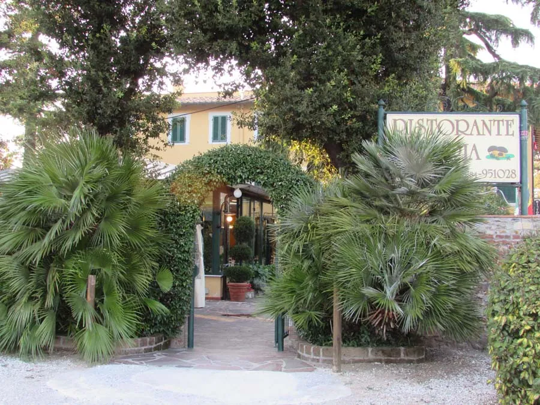
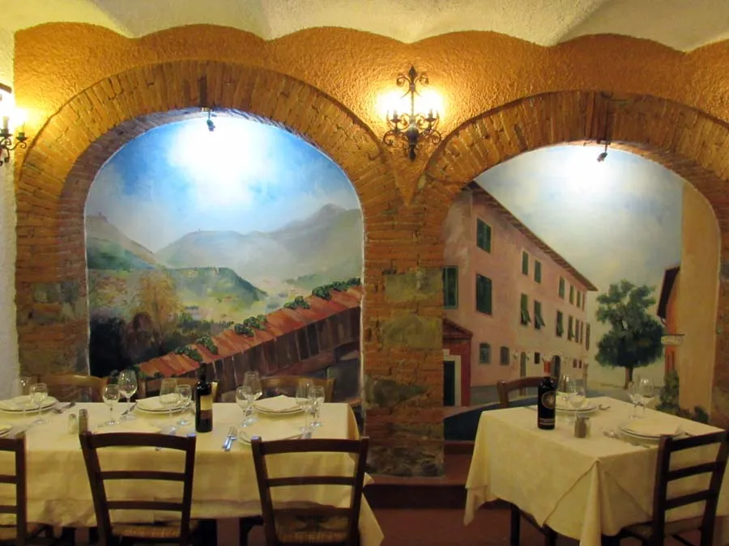
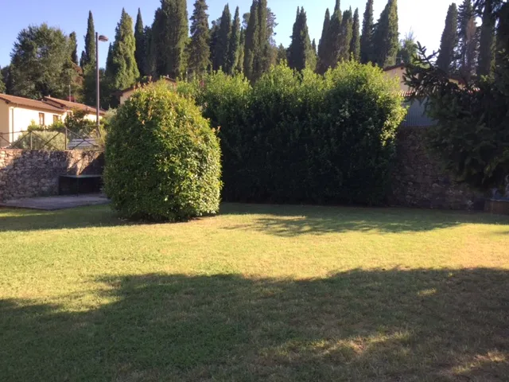
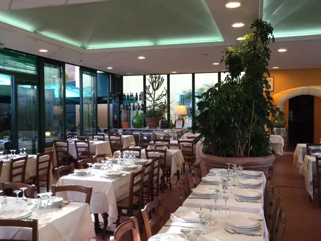

Ristorante Da Franco
Autentica cucina tipica toscana, specialità alla griglia e funghi nel cuore di Montemagno Camaiore. 30 anni di tradizione culinaria.
Scopri i nostri piatti e l'atmosfera autentica
Desideri gustare un delizioso piatto di carne alla griglia? Cerchi specialità della cucina toscana tradizionale o un primo piatto gustoso con funghi? Da Franco è la scelta perfetta per un'esperienza culinaria indimenticabile!




I nostri orari di apertura
- Lunedì: Chiuso
- Martedì e Mercoledì: 19:00 - 22:00 (solo cena)
- Giovedì - Domenica: 12:00 - 14:00 | 19:00 - 22:00 (pranzo e cena)
Si consiglia la prenotazione, specialmente nei weekend
Dicono di noi
Ampio ristorante di terra, servizio attento e cordiale, menù toscano autentico, buon vino e prezzo assolutamente economico in rapporto alla qualità e alla quantità di quanto mangiato.
— Cliente TripAdvisor
Seconda volta in questo ottimo ristorante. Risotto ai funghi e tortelli fatti in casa al ragù superbi. Grigliata buonissima e abbondante. Per finire dolce e amaro!
— Cliente TripAdvisor
La nostra storia
Da oltre 30 anni, il Ristorante Da Franco accoglie i suoi ospiti in un ambiente familiare e autentico, immerso nelle dolci colline di Montemagno. Proponiamo piatti tipici della tradizione toscana, pasta fresca fatta in casa, carni alla griglia di prima qualità e pizze cotte nel nostro forno a legna.
La nostra passione è offrire qualità, genuinità e ospitalità, mantenendo vive le ricette tradizionali della Versilia e della Garfagnana, utilizzando ingredienti freschi e locali.
Contatti e prenotazioni
Via di Montemagno 45, 55041
Montemagno Camaiore (LU), Toscana
Prenotazione consigliata
Per garantirti il miglior servizio, ti consigliamo di prenotare il tuo tavolo, specialmente nei weekend e durante i periodi di alta stagione.